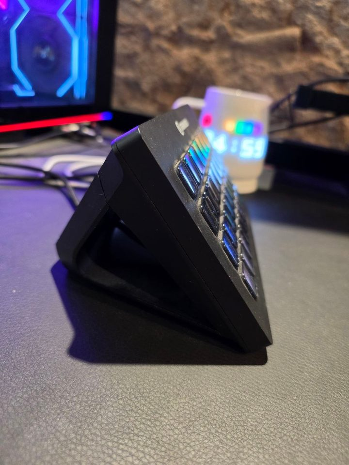
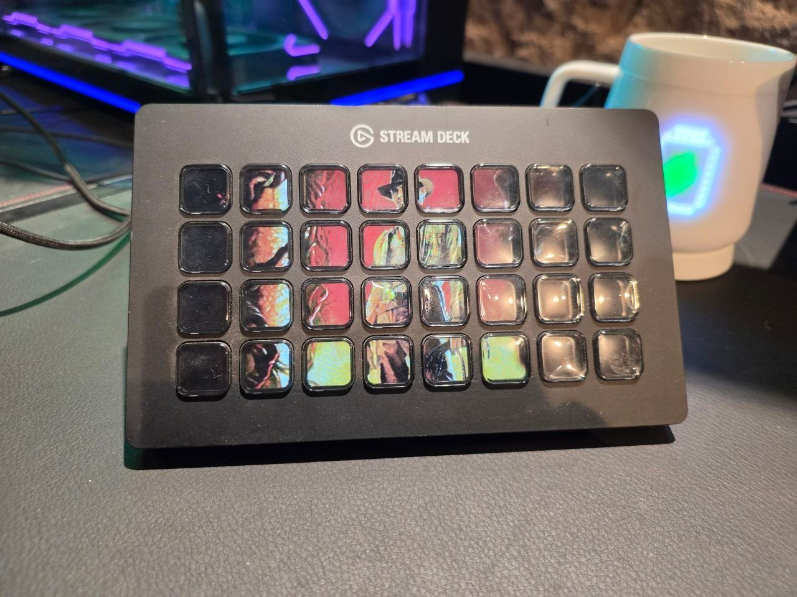

Arrastra para orbitar · rueda para zoom. Clic en una tecla LCD para resaltar su índice (fila, columna). Las caras LCD emiten el recorte 8×4 de la foto METAHUMAN (face-live.png): Indiana Jones visible como en el deck físico; columnas oscuras de la foto quedan oscuras. Silueta v2 intacta. Con el puente encendido, las teclas siguen EN VIVO la página activa del perfil Elgato de METAHUMAN (iconos del perfil ProfilesV3, cada ~3 s). Honestidad: es un puente de perfil Elgato, no lectura HID cruda; imágenes dinámicas de plugins (Key Creator, contadores) no salen. Sin puente: foto fija.

